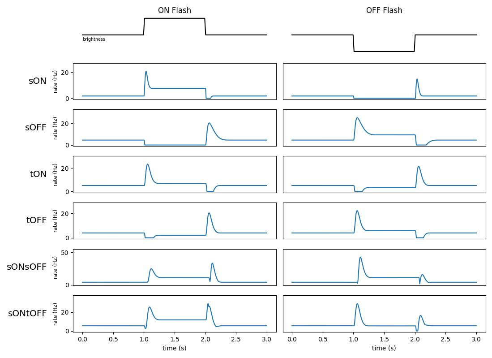

FilterNet - Visual Filter Models#
Note
The proceeding page refers to the model types and parameters for LGN (e.g. visual) filters. For information about auditory filters please click on this link.
Model Types#
FilterNet’s LGN submodule attempts to recreate behavior of the major cell-types in the early visual area, the retina and thalamic relay. These cells-types are mainly classified by how their firing-rate changes to an increase (ON signal) or decrease (OFF signal) of brightness in their immediate visual field. ON-cells are excited by an increase in brightness and are depressed by darkness. OFF-cells have the opposite reaction. The cells are also classified by if their reaction is sustained (s) or transient (t) for the duration of the change in the visual field.
As such the main base-line cell models used in by FilterNet are sOFF (sustained-ON),
sOFF (sustained-OFF), tON (transient-ON), and tOFF (transient-OFF).
Some cells may also have both transient and sustained sub-systems, and can display transient/sustained
excitation by both ON and OFF signals in their visual field. These include sONsOFF, sONtOFF, and
LGNOnOFFCell.
The following shows examples model types and their responses to both an ON and OFF full field flash stimuli.

Besides the core models (sON, sOFF, tON, tOFF, sONsOFF, sONtOFF), FilterNet
also includes a number of built in subtypes that refer to their temporal frequency (TF); ex sON_TF4,
tOFF_TF8, etc. These have the same behavior, but will have small optimizations based experimental
data taken from (Durant et. al 2016,
Billeh et. al 2019). These cells will have an optimal experimentally
shown response at the given frequency at which the grating image moves.
Representation in SONATA#
In the SONATA circuit format, to assign an invidiual cell or cell-type a specific you must use the model_type and
model_template attributes. model_type must be set to either virtual or filter, so BMTK and other
simulators know it’s a filter cell (and not a multi-compartment, LIF, or other type of cell). And the model_template
value must be set to lgnmodel:<MODEL> where <MODEL> is any one of the available models (ex sON, sOFF,
etc).
In the BMTK NetworkBuilder you can set a collection of 100 cells to be tON using the following:
net.add_nodes(
N=100,
model_type='filter',
model_template='lgnmodel:tON',
dynamics_params='tON_params.json',
x=np.random.uniform(0.0, 240.0, size=100),
y=np.random.uniform(0.0, 120.0, size=100)
)
Model Parameters#
While the model-type describes the general behavior of the cell, the exact shape of the response is dependent on individual properties of the cell/cell-types. Including how much of the visual field does each cell cover, the intensity of response, and the shape of the decay/recovery.
All cell models have both a spatial and temporal filter used when integrating visual stimuli into firing rate response rates.
Spatial Filter Parameters#
The spatial filter (along with the cells x, y coordinates) is used to define which part of the visual field will trigger a response in each individual cell. The response is a gaussian centered at cell location (x, y) using the following properties:
spatial_size(float, float) - The row and column spread of the filter, specifically the standard deviations (std) of the Gaussian, default value (1.0, 1.0).spatial_rotation(float) - The rotation angle of the Gaussian filter in degrees; default value 0.0.
The following image shows how spatial_size and spatial_rotion filter looks for a cell at location (100.0, 100.0)

Note About Coordinates
By default, the (x, y) coordinates of each cell should match be within the same spatial coordinates as the row and column pixel coordinates of numpy matrix/movie file, respectively. If a movie has 240x120 pixels, (row_size x column_size), then it has pixel coordinates (0, 0) at the top left corner and (240, 120) at the bottom right corner. A cell placed outside this range, with a small std-dev, will not receive any input.
Temporal Filter parameters#
The temporal component of the filter is a time convolution function used to track changes in the visual field (within the given spatial range of each cell). The filter function is a composite of two cosine filters - a larger positive bump near time t=0, followed by a smaller negative bump, then decays to 0 as we go further into the past. The filter function is controlled by the following 3 parameters:
opt_weights(float, float) - Sets the magnitude of the first and second cosine bumps, respectively. Should have opt_weights[0] > 0 >= opt_weights[1].opt_kpeaks(float, float) - Set the times of the peak/maximum magnitudes for the first (major) and second (minor) cosine bumps, before delays are applied. In units of sampling ratedtmilliseconds (default 1.0 ms). The kpeaks values of both peaks must be positive, and the second peak must be more spread out than the first; opt_kpeaks[1] > opt_kpeaks[0] > 0.0.opt_delays(float, float) - Set the delay/onset of the first and second bump, representing the number of milliseconds back from the current time. Like above given in units ofdtmilliseconds (default 1.0). Must have opt_delays[1] > opt_delays[0] >= 0.
The following shows how each parameter effects a typical filter. See below dropdown for more information on how kernel is calculated!

An overview of how the temporal filter kernel is generated
The temporal kernel is made up of two separate long-tailed cosine “bumps”, using a log-function so that the spread of the bumps increases as the kpeak values get farther from 0.0. First it uses the
opt_kpeaks[0]value \(k_0\) to create the first cosine bump filter.\[\begin{split}y_0(t) = \begin{cases} \big( \cos( \frac{\pi}{2} \ln( \frac{t}{k_0} ) + 1 \big) /2 & \text{if} -\pi \le \ln(\frac{t}{k_0}) \le \pi \\ 0 & \text{otherwise} \end{cases}\end{split}\]The same formula is used to get the second bump value \(y_1(t)\) using \(k_1\) =
opt_kpeaks[1] > opt_kpeaks[0]Then to get the full kernel \(k(t)\) the we must:
Shift both cosine bumps by
opt_delayvalues \(0 \le d_0 \le d_1\).Apply
opt_weightsvalues \(w_0 > 0 > w_1\) to adjust magnitudes of each bump.Combine the two cosine bumps piecewise.
\[k(t) = w_0 \cdot y_0(t - d_0) + w_1 \cdot y_1(t - d_1)\]note: regularization and optimization hyperparameters, not described here, may also be applied in actual kernel
Other parameters#
spont_fr(float) - The spontaneous/resting firing rate of the cell, in Hz.jitter_lower,jitter_upper(float) - Optional. Applies random noise at run-time to the temporal parameters (opt_weights,opt_kpeaks,opt_delays) for each cell. Uses functionnp.random.uniform(jitter_lower*opt, jitter_upper*opt). with jitter_lower <= jitter_upper.
Representation in SONATA#
There are two main ways to store and represent the parameters for each cell and/or cell-type. The first and easiest is to store them in a separate dynamics_params.json JSON formatted file. A typical example will look like the following (but with different values for each different model-type)
{
"spont_fr": 5.0,
"jitter_lower": 0.9,
"jitter_upper": 1.1,
"spatial_size": [10.0, 10.0],
"spatial_rotation": 0.0,
"opt_wts": [2.114240294638181, -1.2215255706921226],
"opt_delays": [0, 5],
"opt_kpeaks": [54.48070427796576, 127.92115511653763]
}
Then in the SONATA nodes or node-types file you must have attribute dynamics_params set to the file
tOFF_TF1_params.json. Any node and/or node-type (eg cell and/or cell-type) with that file set to their
dynamics_params will import those parameter values when instantianting their filters.
Using dynamics_params how two main benefits:
It allows you to assign multiple cells to the same filter. Particularly when you have optimized filters that you can assign throughout the visual field.
You can quickly modify and change parameter values. You can edit the json file with a simple text editor between simulations to see how results will vary when altering parameter options.
Alternatively you can set any of the parameters to be in the SONATA nodes.h5 or node-types.csv file. For example in the network builder to create 100 tOFF cells with values stored in the hdf5 file:
lgn.add_nodes(
N=100,
model_type='filter,
model_template='lgn_model:tOFF',
x=np.random.uniform(0.0, 240.0, size=100),
y=np.random.uniform(0.0, 120.0, size=100)
spatial_size=(30, 30),
spatial_rotation=0.0
opt_kpeaks=get_kpeaks(100), # returns 100x2 matrix
opt_weights=get_weights(100), # returns 100x2 matrix
opt_delays=calculate_delays(100), # returns 100x2 matrix
)
The main benefit of this is that each cell can have unique parameter values once the network is built.
If multiple parameter values are found, BMTK will resort to the more granular value. If a cell has both opt_kpeaks
values in both the nodes HDF5 file (assigned value for the individual cell) and the dynamics_params (assigned value
for it cell-type) then it will resort to the value in the HDF5 file.
Dual System Cells#
Some model types, sONsOFF and sONtOFF, are composed of two separate and independent temporal filters that
FilterNet will fluxate between depending on the nature of the stimuli. Such models require two sets of temporal
parameters; one for the dominate OFF subsystem and another for the dominate ON subsystem.
If using external dynamics_params file, you can use attribute no_dom_params to specify a separate JSON params
file for the non-dominate ON subsystem:
net.add_nodes(
N=100,
model_type='filter',
model_template='lgnmodel:tON',
dynamics_params='tOFF_TF4_params.json',
non_dom_params='tON_TF4_params.json',
...
)
Alternatively you can set individual cell parameters kpeaks_non_dom, weights_non_dom, and delays_non_dom.